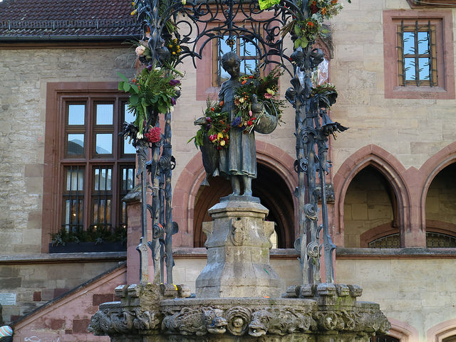
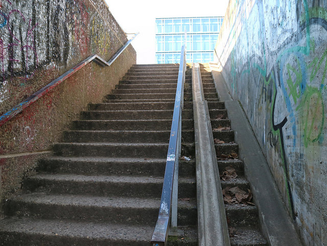
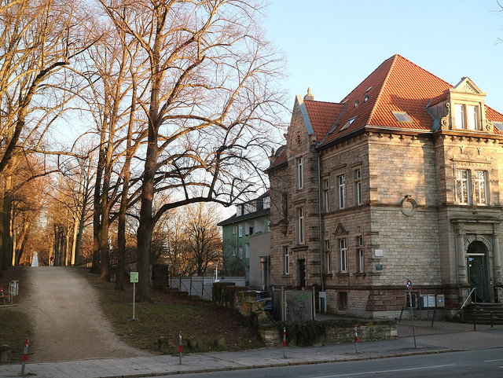
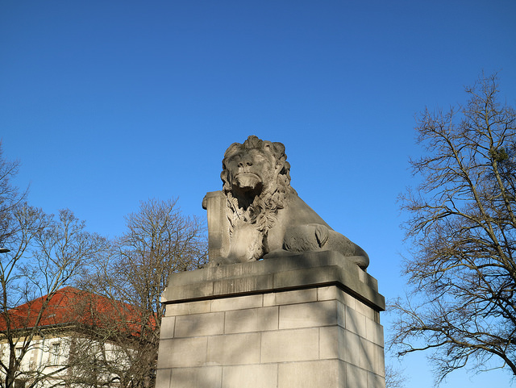
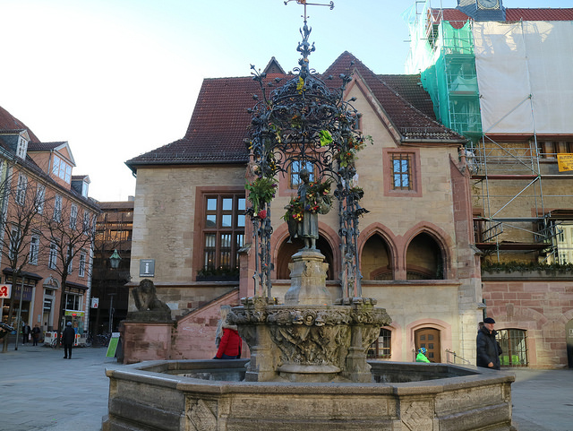
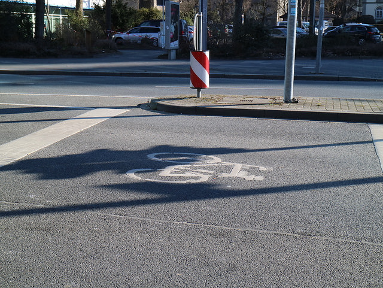
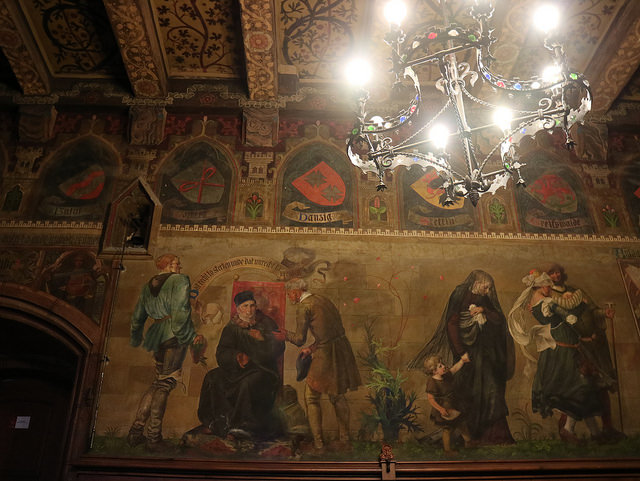
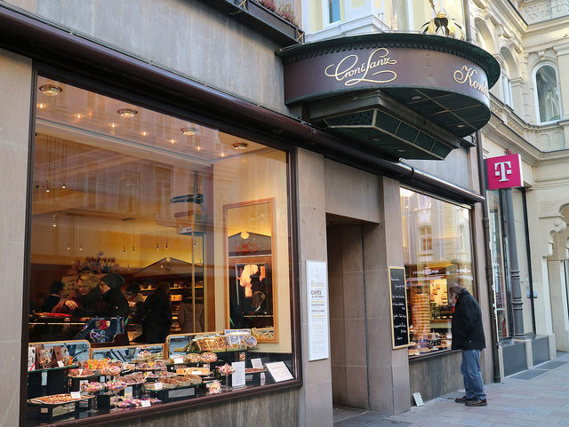
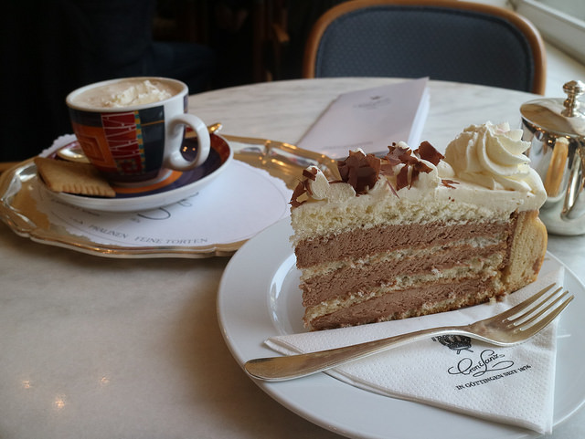
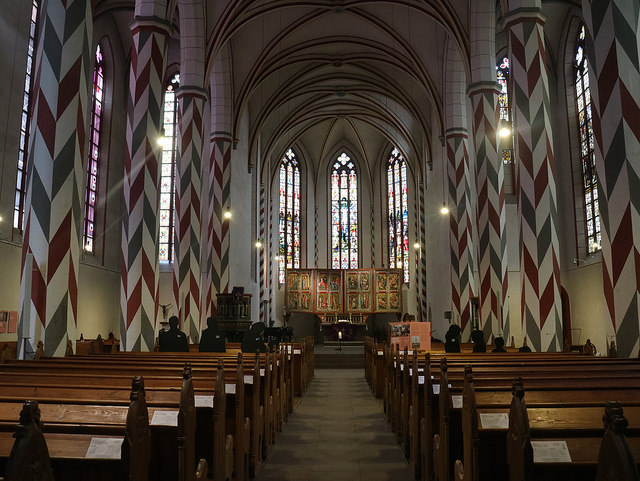

哥廷根大學是一座極具歷史的名校，
或許也可以說是全德國育出最多諾貝爾獎得主的學校，
而他所在的哥廷根也是全德國最知名的四大大學城之一，
來到這座城市，
讓我有種回到杜賓根的感覺，
不過對我來說，
這裡的歷史感不如海德堡以及杜賓根濃烈，
不過或許因為城市較大的關係，
整體生活機能是優良的。
德國四大大學城包含：
海德堡大學(Heidelberg Universität)、
杜賓根大學(Tübingen Universität)、
哥廷根大學(Göttingen Universität)、
弗萊堡大學(Freiburg Universität)
離開Essen後，
我坐了5小時的巴士抵達哥廷根火車站，
在這裡我即將跟接下來要借宿兩晚的沙發衝浪者主見面！
一下車，熟悉的場景馬上映入眼簾，
儘管成排的腳踏車看似有序的擺放在火車站前，
不過在我看來，
這幾年在台大學會的「縫隙中求生存」在這裡倒還是得派上用場的！
坐在車站等了15分鐘左右，一個我站起來只到他肩膀的女子，
帥氣的拿著滑板出現在門口，他是我的CS host: Antonia，
是一個非常可愛隨時會發出憨笑的女子😂 老家在科隆的他說，
他剛到Göttingen的時候，
真的是人生第一次騎著腳踏車在路上有種當皇帝的感覺。
腳踏車友善的城市 友善腳踏車的城市
他說在Göttingen單車的地位甚至比汽車高，
在整座市內除有規劃完善的自行車道，
而等待紅綠燈時，
最前面也有腳踏車專用等待區，
就像台灣畫給摩托車的區塊一樣。
更不用說的是許多樓梯旁都有配置斜坡，
讓騎士能推腳踏車上去。
Göttingen舊城牆
擺放完行李我馬上迫不及待的出發探索這座城，
出了Töni家右轉，
馬上就能看見以前圍繞Göttingen的舊城牆，
雖說是城牆，現在也不過是一大條高起來的土丘，
這樣的土丘將整座舊城區包圍，
現今他是當地人最愛散步的路徑之一，
早上也能看到不少人沿著舊城牆道慢跑。
城牆邊上的獅 走著走著，
還能夠看見具有守門意象的石獅矗立在路口。
其實這座城市我特別想看的景點不多，
頂多想嘗試位於市政廳附近的140年蛋糕老店Cron and Lanz
以及一親養鵝少女的芳澤，
因此在這裡的兩天，
我大多漫無目的行走，
嘗試以最最悠閒且最當地人的方式來探索哥廷根。
再3小時就天黑了，由於時間所剩不多，沒有多想，
我直接朝主幹道前進，
主幹道上滿滿的都是商店，
電信行、超市、咖啡廳、花店等等應有盡有，
雖然適逢換季的打折期，
但身為on a budget的窮遊青年，
我所能做的也只剩Window shopping了😂
一晃眼我就抵達了市政廳前廣場，
而這裡矗立著有「被最多人親過的少女」之稱的養鵝少女雕像。
養鵝少女這座雕像其實是源自於格林童話，
故事訴說一位溫柔謙遜的公主在出嫁鄰國的途中，
被侍女背叛並丟棄路邊，
這位侍女甚至穿上公主的衣裳，
假裝自己是公主地嫁給鄰國王子，
而真正的公主則淪為一位養鵝少女，
在鄰國皇室底下工作，
童話總是需要一個好的結局，
最後睿智的老國王發現了侍女的陰謀，
因而將侍女處死並且讓兒子迎娶真正的公主，
而這座雕像，
就是為了要紀念這位曲折的美麗公主所樹立，
而周圍的拱形裝飾及花圈，
更象徵著這位公主不受環境改變的善良及純真。
然而關於這座雕像也有另一版本，
故事中的養鵝少女因為不忍一青年因沒錢而不能就學，
而決定將自己牧鵝所賺取的微薄收入用來供給其學費，
得到資助的青年在完成學業後，
因為感激之情，
而在此樹立了一座牧鵝少女的雕像，
用來紀念這位他人生中的貴人。
養鵝少女 Anyway,
或許正因為這樣的故事背景，
哥廷根也同時被列為德國觀光路線—童話大道上的其中一個城鎮。
至於為何會說他是「被最多人親過的少女」呢？
原因與哥廷根大學的傳統有關，
在這裡，每位成功拿到學位的博士生，
都會在畢業那天到噴水池親吻牧鵝少女的臉頰，
正因為如此，她的臉龐才會特別有光澤。
Göttingen舊市政廳壁畫
既然都來到市政廳了！
不妨走幾階樓梯進市政廳內部看看，
儘管二樓是座需要付費參觀的博物館，
一樓的壁畫就已經夠我看的了！
除此之外，tourist information也在這座市政廳裡面，
如果想要更了解這座城市的歷史，也可以入內索取中文版本的簡章。
離開市政廳後繼續朝哥廷根大學前進，
就會看到140年的甜點店Cron&Lanz，
這是一間外觀fancy的咖啡廳，店門頂有一漆金的皇冠，
而巨大的玻璃櫥窗中則擺著許多令人垂涎三尺的甜點，
這間的價位不算便宜，不過仍是當地人相當喜歡在假日坐坐聊天的地方。
Cron&Lanz 造訪Cron&Lanz的這天恰好是德國什麼店都不開的禮拜天，
因此大家閒來無事都喜歡到開著的咖啡廳喝咖啡聊是非，
儘管已經將近下午五點，
仍有不少德國人在店內坐著，
非常的悠閒。
（每次來歐洲都覺得歐洲人真的是很會享受生活啊）
Baumkuchen und Schokolade mit Sahne
這次點的餐點是由Baumkuchen為底的Aida以及擠上鮮奶油的熱巧克力佐奶油餅乾，
CS host的室友早在我來之前，
就告訴我這裡的飲品非常普通，
因此只需要花錢吃塊蛋糕即可，
不信邪的我依舊花錢點了一杯喝的，
果不其然非常普通！
How to order in Cron&Lanz?
Step 1: 在蛋糕櫃選一塊蛋糕，
告訴他要內用還是外帶（內用一塊蛋糕會貴將近1歐）
Step 2: 若選擇內用，接下來你會拿到一張蛋糕單
Step 3: 坐定位後，待服務生到桌邊點飲料
Step 4: 服務生會把蛋糕單拿走，你就等著吃吧！
Cron&Lanz--Aida Baumkuchen直翻就是中文所說的「年輪蛋糕」，
是源自德國非常傳統的蛋糕，
而Aida最外層較硬的蛋糕底內還夾上了杏仁糖霜，
不過量只有一點點，
如果怕杏仁但又很想嘗試的朋友可以試試。
德國蛋糕至今都還沒有徹底讓我失望過，
不過目前心目中的第一名仍是來自黑森林地區的黑森林蛋糕！
德國的黑森林蛋糕真的是好吃到無話可說！
事實上Cron&Lanz的斜對面就是全哥廷根最有名的教堂–
St. Jacobi。 St. Jacobi Kirche
儘管教堂外觀看似不起眼，
但內部卻十分具有特色，
支柱漆上紅色灰色及白色的格紋，
反而讓整座教堂多了點活潑的異國風情，
不知為何，這樣的設計更讓我想起聖彼得堡的建築物。
除了入內感受教堂內莊嚴肅穆的氣息，
或是欣賞美麗的花窗以外，你也可以花2歐，
爬到教堂鐘塔頂端俯瞰整座城市。
身為登過如此多座歐洲教堂的人類，
不得不說這座教堂的是挺值得一爬的，
攀爬過程除了能近距離看見許多巨型的鐘及其運轉外，
整個登塔的體驗更是讓我十分難忘。
初入塔樓時，
樓梯還像其他教堂般是極為狹窄的螺旋石梯，
不過進入第一座平台後，
緊接著的就是極為陡峭的木梯了，
目測傾斜度約有70度這麼斜，
是個必須倒著下樓的斜度，
我想對於有些許懼高症的人來說會是項挑戰。
頂層的每一面牆都有扇窗，
你可以逕自打開並自各個角度欣賞Göttingen，
陽光自厚重的雲層縫隙中灑落，別有韻味。
出教堂繼續往前走就會在道路正中間看見一座兩人糾纏不清的雕像，
原先為噴泉的Nabel在1977年因為完全損毀而遭到停用，
1982年知名雕刻家在此樹立一銅製的雕像，
命名為「Der Taz舞者」，
自此這雕像就變成舊城區很好的meeting point。
P.S 圖中左側魚形狀的店家名為Nordsee，
德文直譯為「北海」，
它是德國本土的速食連鎖店，
店內以各式魚的速食餐點為主，
若有機會可以進去吃吃看，
不過在歐洲吃外食都得抱著價格不菲的心理準備。
繼續往前走就會到哥廷根大學的校區，
距離舊城區較近的這側校園主要以人文學科的科系為主，
其他數理的科系則在較遠的校區。
Antonia說靠近學校的這段路被當地學生暱稱為Dönner大道，
因為大多數的Kebab都聚集在此，
而當地學生通常在課間或是去圖書館念書後，
都會速速的來這裡以較為低廉的價位飽餐一頓。
Göttingen大學藝術中心 和杜賓根一樣，哥廷根是一座大學城，
因此在城中各處都能看見校舍，
其中這棟氣派的建築，
就是哥廷根大學的藝術中心，
藝術中心前有一座看似臨時設立的立牌，
上面羅列出所有與這所學校息息相關的名人，
包含創辦這所學校的英國國王喬治二世、
發現最小平方法以及常態分佈函數的數學家高斯等。
知名校友錄 除了列出姓名以外，
看板上還會註明該人物在哥廷根大學就讀或是任職的時間，
同時也會對人物做些小介紹，花點時間讀讀也是蠻有趣的。
到這裡的期間我一直很想造訪Göttingen Universität的圖書館
或多或少想要拿這裡跟杜賓根做點比較，
沒想到就在圖書館的周圍，
我人生中第一次被索吻了！
當時一位身穿粉紅短裙、黑色上衣、頭戴聖誕帽的男子，
手上拿了一把跟牙刷差不多大的刷子朝我走來，
基本上他跟我說的話，
大致翻譯是這樣的：「請問你能給我一個吻嗎？
親臉頰就好了！今天是我30歲生日，
我今天一整天都要穿這套粉紅色的衣服用這把小刷子清樓梯，
要是你可以給我一個吻，那真的會是很大的鼓勵。」
想也知道我當然沒有答應，
他看我一臉觀光客樣，
就說：「如果你想要，你可以拍我，這是一個德國的傳統文化。」
我回家後就問了Antonia，
沒想到竟然是真的有！
不過這是一個下薩克森邦聯(Niedersachen)特有的傳統，
並不是全德國都如此實施，
當一個男人年滿30歲卻還未結婚的話，
就必須穿上奇特的服裝打掃樓梯，
至於要穿什麼、樓梯上會擺什麼，
全都由你的朋友決定，
而在你刷地的期間，
你的朋友便會拿著啤酒看好戲般的陪伴你直到達成任務。
Alte Botanische Garten--Cactus House
如果你是個熱愛植物的人，
那你一定不能錯過哥廷根大學的植物園，
打開Google Map你其實就可以看到一大片的綠地，
這裡有超過10座溫室，
裡面種植來自世界各地不同的植物，
光是上圖這樣專種的仙人掌的溫室，就有兩個。
造訪前一天晚上剛好適逢擁有全球最大不分支花序的巨花魔芋開花，
因此所有觀光客及當地人無不希望能趁機一睹巨花魔芋開花的風采，
可惜仍然錯過了。
或許是因為盛產名人的緣故，
整座城內遍佈大大小小的雕像，
其中最著名的大概就是在舊城牆附近的高斯像。
高斯大概是哥廷根大學出產最出名的人物，
具有數學王子之稱的高斯，
不只奉獻大半輩子任職於此，
最後也在哥廷根逝世，並埋葬在此地。
高斯之墓所在的地方，
現在成為公園，
為了促進大眾使用，
市政廳甚至在此區域設置為數不少的烤肉架，
Antonia說夏天來臨時，
會有很多人在此烤肉，
儘管周邊墓碑不少，
整個畫面光是想像就非常違和，
但這樣的景象對哥廷根居民來說，
卻是他們的夏季日常。
畫面轉回市中心，
哥廷根舊城區雖然大多數都以木造建築為主，
歷史情境非常深刻，
但若要說到最古老的建築，
那絕對需要到Rote Straße走一遭。
這條街上擁有15世紀中建造以木頭為框架的傳統房屋，
不過個人認為更多的是傳統與現代融合的新氣象。
Junkerschäker Rote Straße 這條路不長，
不拍照的話5分鐘內絕對可以走完，
因此在老城區閒晃的時候千望別忘記到這裡看看全鎮最古老的木桁房喔！










●
●
●
●
●
●
●
●
●
德國・哥廷根｜
德國知名大學城與牧鵝少女之緣
2018/03/14
 LIKE
LIKE
 收藏
收藏